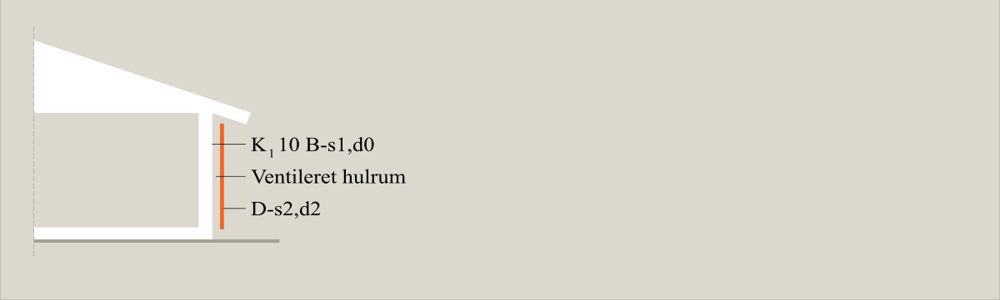
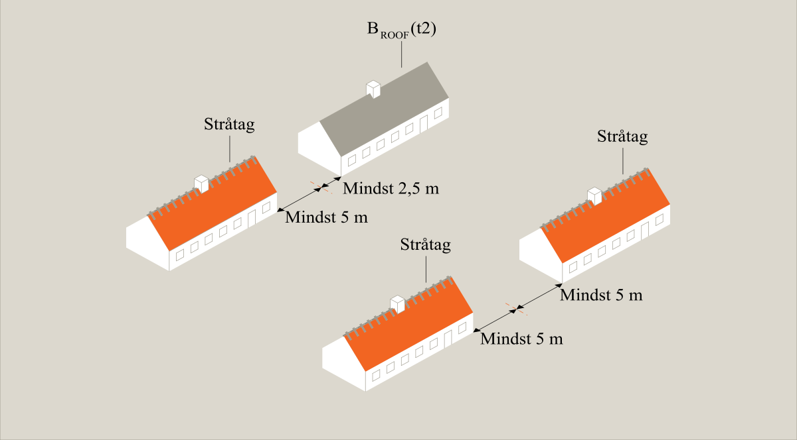
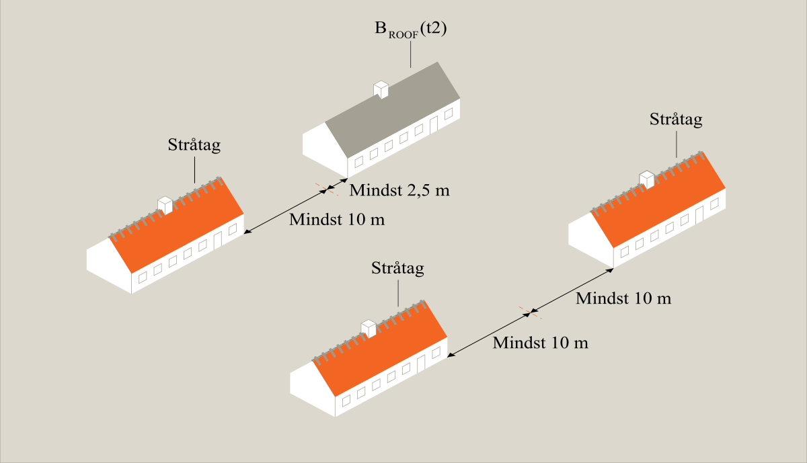
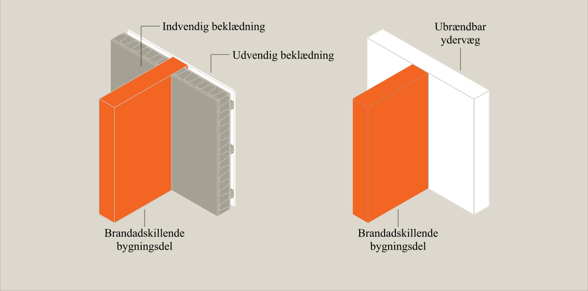
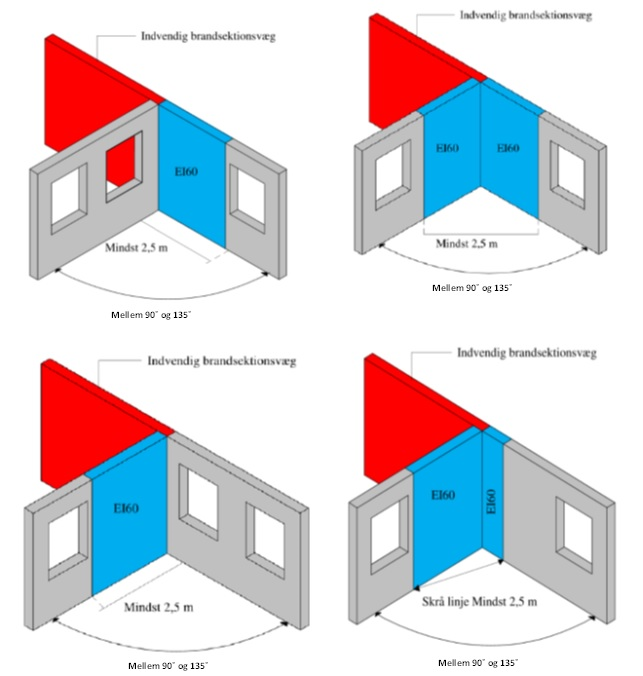
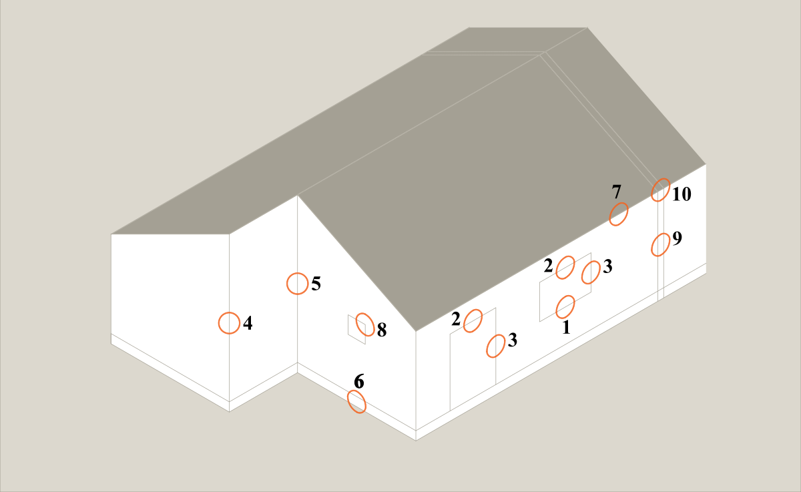
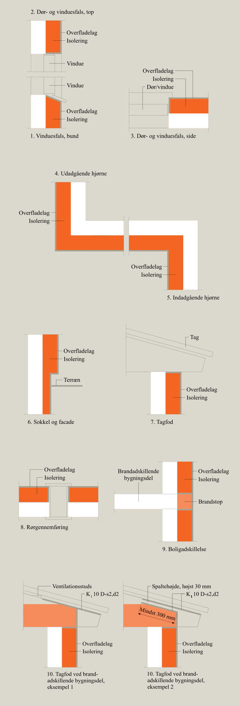

Swipe horisontalt for at se alle emner
Brand (§ 82 - § 158)
- BR18 (Aktuelt)
- BR18 (1/7-31/12 2025)
- BR18 (1/1-30/6 2025)
- BR18 (1/7- 31/12 2024)
- BR18 (1/1- 30/06 2024)
- BR18 (1/1- 31/12 2023)
- BR18 (17/9 - 31/12 2022)
- BR18 (1/7 - 16/9 2022)
- BR18 (1/1 - 30/6 2022)
- BR18 (29/6 - 31/12 2021)
- BR18 (1/1-29/6 2021)
- BR18 (1/7-31/12 2020)
- BR18 (10/3-30/6 2020)
- BR18 (1/1-9/3 2020)
- BR18 (4/7-31/12 2019)
- BR18 (1/1-4/7 2019)
- BR18 (1/7-31/12 2018)
- BR18 (1/1-30/6 2018)
- BR15 (2015-2018)
- Tidligere BR (1961-2010)
Bilag 1a - Præ-accepterede løsninger - Enfamiliehuse
Introduktion
Linket er kopieret
Dette bilag hører til bygningsreglementets vejledning til kapitel 5 – brand. Bilaget indeholder præ-accepterede løsninger på, hvordan kravene til brandsikkerhed i bygningsreglementet 2018 (BR18) kan opfyldes for fritliggende og sammenbyggede enfamiliehuse.
Ved at følge de præ-accepterede løsninger i dette bilag sikres det, at bygningen har en tilfredsstillende sikkerhed for personer i tilfælde af brand og for brandspredning til andre grunde. Dette bilag kan således bruges til at dokumentere, at et enfamiliehus overholder krav til brandsikring, og følges de præ-acceptererede til fulde, sikres det også, at enfamiliehuset kan indplaceres i brandklasse 1 eller 2. Hvis enfamiliehuset indplaceres i brandklasse 2, skal en certificeret brandrådgiver tilknyttes byggeriet.
For præ-accepterede løsninger for sekundært bebyggelse herunder f.eks. garager, carporte og udhuse, henvises der til bilag 1b – Præ-accepterede løsninger for sekundært bebyggelse i tilknytning til enfamiliehuse.
OBS: Hvis du forsøger at generere en pdf af dette bilag ved hjælp af ikonet oppe til højre på hjemmesiden, vil du ind til videre få en version der ikke svarer til udgaven på hjemmesiden.
Byggerier, som er omfattet af dette bilag
Linket er kopieret
Dette bilag omfatter fritliggende og sammenbyggede enfamiliehuse i anvendelseskategori 4, og som er indplaceret i risikoklasse 1.
Enfamiliehuse som beskrevet i dette bilag omfatter følgende typer byggeri:
- Byggeri med én bolig til helårsbeboelse, i op til 3 etager over terræn og en etage under terræn, som er fritliggende.
- Byggeri med mere end én bolig til helårsbeboelse, i op til 3 etager over terræn og en etage under terræn og med kun lodret lejlighedsskel, herunder dobbelthuse, rækkehuse, kædehuse og gruppehuse.
- Byggeri til sommerhuse, campinghytter, i op til 3 etager over terræn og en etage under terræn, der ikke er omfattet af campingreglementet, og lignende ferieboliger.
- Byggeri til enfamiliehus, der er omfattet af ovenstående, og som sammenbygges med bygninger, der ikke er omfattet af dette bilag.
Bemærk, at der for enfamiliehuse i 3 etager er en grænse for etagearealet, hvilket er angivet i afsnit 1.2.
Der er ikke udarbejdet præ-accepteret løsninger for enfamilieshuse med:
- 3 etager over terræn med et etageareal større end 150 m2
- mere end 3 etager over terræn
- mere end 1 etage under terræn
Disse kan henføres til risikoklasse 2-4, og skal dermed indplaceres i brandklasse 3 eller 4.
1.1.1 Etageantal
Hvor en tagetage er udnyttelig, dvs., at den kan indrettes eller anvendes til beboelse, skal denne medregnes som en etage af de 3 etager over terræn i boligen.
Det fremgår af BR18, § 458, at en kælder skal medregnes som en etage, såfremt loftet ligger mere end 1,25 m over terræn. Ved et skrående terræn betragtes kælderen som en etage såfremt en del af kælderen har loft liggende mere end 1,25 m over terræn. Brandmæssigt betragtes en kælder som en etage over terræn, såfremt en del af gulvet er over terræn.
1.1.2 Etageareal
Det fremgår af BR18, § 458, at etageareal beregnes ved sammenlægning af bruttoarealerne af samtlige etager, herunder kældre og udnyttelige tagetager samt altanlukninger, udestuer, forbindelsesgange og lignende. Detaljeret beregningsregler fremgår af BR18, § 458, stk. 2 – 5.
1.1.3 Liberale erhverv
Bilaget omfatter også enfamiliehuse, hvor en del af huset anvendes til erhverv, der sædvanligvis udøves i forbindelse med en bolig, som for eksempel frisør, ejendoms-, advokat-, revisor- og arkitektvirksomhed og lignende liberale erhverv samt dagpleje og lignende.
1.1.4 Integrerede garager, carporte, udhuse mv.
Garager, carporte, udhuse mv. anses for at være integrerede når de ligger under samme tagkonstruktion som den primære bygning, dvs. beboelsen.
I enfamiliehuse med integreret garage, carport, udhus mv. regnes den integrerede bygningsdel for at være en del af den primære bygning, dvs. beboelsen, og er derfor medtaget i dette bilag. Den integrerede bygningsdel skal brandmæssigt adskilles fra den primære bygning, men betragtes ikke som selvstændig sekundær bebyggelse, som hvis den var fritliggende eller sammenbygget med den primære bygning. En sekundær bebyggelse kan godt være sammenbygget uden at være integreret.
1.1.5 Ombygninger
Uanset om en ombygning kræver byggetilladelse eller ej, skal selve ombygningen, og det der påvirkes heraf, overholde de præ-accepterede løsninger i dette bilag, der er relevante for ombygningen.
Ved væsentlige ombygninger, hvor eksisterende brandmæssige forhold ikke influeres, må disse forhold fortsat gerne overholde de brandmæssige krav i bygningsreglementet, som var gældende ved byggeriets opførelsestidspunkt, og behøves derfor ikke nødvendigvis at overhold de præ-accepterede løsninger i dette bilag.
Opdeling i anvendelseskategori, risikoklasse og brandklasse
Linket er kopieret
Byggeri skal i henhold til BR18 indplaceres i anvendelseskategorier, risikoklasser og i brandklasser.
Enfamiliehuse skal, som beskrevet i afsnit 1.1, være indplaceret i anvendelseskategori 4 samt risikoklasse 1 for at være omfattet af dette bilag.
Dette bilag anvender ikke anvendelseskategorier, risikoklasser eller brandklasser ved beskrivelse af de præ-accepterede løsninger. For nærmere beskrivelse af indplacering i bygningsafsnit, anvendelseskategorier, risikoklasser og brandklasser, henvises der i stedet til kapitel 1: Generelt om sikkerhed om brand, der er en del af Bygningsreglementets vejledning til kapitel. 5 – Brand.
1.2.1 Anvendelseskategori
For at byggeri kan være indplaceret i anvendelseskategori 4, skal følgende forhold ifølge BR18, § 85 være gældende for byggeriet:
- Personer, der opholder sig i byggeriet er kendte med flugtvejene, og personerne skal ved egen hjælp kunne bringe sig i sikkerhed, og
- Byggeriet er indrettet med sovepladser.
1.2.2 Risikoklasse
For at et enfamiliehus kan være indplaceret i risikoklasse 1, skal følgende forhold ifølge BR18, § 86 være gældende:
- Højst 2 etager over terræn, og
- Højst 1 etage under terræn
Eller
- Højst 3 etager over terræn,
- Højst 1 etage under terræn, og
- Etagearealet overstiger ikke 150 m2 for den enkelte boligenhed.
1.2.3 Brandklasse
Brandklassen for et byggeri bestemmes efterfølgende på baggrund af byggeriets risikoklasse og den valgte metode for dokumentation af brandsikkerheden, jf. BR18, § 490. Enfamiliehuse der er omfattet af og opføres efter dette bilag skal indplaceres i brandklasse 1 eller 2. Brandsikkerheden dokumenteres således med bilagets præ-accepterede løsninger.
1.2.3.1 Brandklasse 1
Brandklasse 1 omfatter byggeri i risikoklasse 1, hvor hvert bygningsafsnit har et samlet etageareal, der er højst 600 m2. De tekniske løsninger skal udføres i overensstemmelse med de præ-accepterede løsninger, som er beskrevet i dette bilag. Der må alene anvendes simple brandtekniske installationer, og håndslukningsudstyr.
Enfamiliehuse i brandklasse 1 kan have et etageareal, der højst er 600 m2, og skal være brandmæssigt fritliggende fra ejendommens øvrige bebyggelse. Der kan ses bort fra de sekundære bebyggelser, der ikke medregnes i etagearealet, jf. beregningsreglerne i BR18, § 455, stk. 4.
Enfamiliehuse er brandmæssigt fritliggende, hvis deres indbyrdes afstand svarer til summen af den tilladte afstand til skel, vej- og stimidte for de enkelte byggerier. Denne sum svarer til de afstande der er angivet i Tabel 3 i afsnit 4.5.2.
Der kan opføres flere enfamiliehuse i brandklasse 1, således at det samlede etageareal er større end 600 m2 på ejendommen. Dette kræver dog, at hvert bygningsafsnit er brandmæssigt fritliggende, og har et etageareal, der er højst 600 m2.
Der kan også opføres flere enfamiliehuse der er sammenbygget med erhverv, f.eks. fritidslandbrug og værksteder i brandklasse 1, således at det samlede etageareal er større end 600 m2 på ejendommen. Dette kræver dog, at hvert bygningsafsnit er brandmæssigt fritliggende, og har et etageareal, der er højst 600 m2. Derudover skal adskillelsen mellem bolig og erhverv være udført bygningsdel EI 60 / A2-s1,d0 [BS-bygningsdel 60].
Til eksisterende enfamiliehuse kan der opføres tilbygninger i brandklasse 1 uanset om bygningsafsnittet er brandmæssigt fritliggende, såfremt tilbygningen er brandmæssigt fritliggende i forhold til ejendommens øvrige bygningsafsnit, og såfremt etagearealet for det samlede bygningsafsnit er højst 600 m2.
1.2.3.2 Brandklasse 2
Når forudsætningerne for brandklasse 1 ikke overholdes, kan byggeriet indplaceres i brandklasse 2, hvis bilagets præ-accepterede løsninger fortsat følges. Hvis de præ-accepterede løsning ikke følges skal bygningen indplaceres i brandklasse 3 eller 4.
1.2.3.3 Sammenbyggede enfamiliehuse større end 600 m2
Det er normalt, at sammenbyggede enfamiliehuse (rækkehuse, dobbelthuse mv.) kan have et etageareal på mere end 600 m2 samlet set for alle boligenhederne. I så fald skal det samlede byggeri som udgangspunkt indplaceres i brandklasse 2. Det samlede byggeri kan dog indplaceres i brandklasse 1, såfremt det opføres med et etageareal på højst 600 m² for hvert fritliggende bygningsafsnit.
Omfang af dokumentation
Linket er kopieret
Dokumentation af brandforhold fremgår af Vejledning til BR18, kapitel 29, dokumentation af brandforhold, men omfanget af dokumentation for enfamiliehuse i brandklasse 1 er gengivet i dette afsnit. For dokumentation ved enfamiliehuse i brandklasse 2, og dokumentation generelt, henvises der til netop den føromtalte vejledning.
Dokumentation for brandforhold i et enfamiliehus skal opfylde kravene i bygningsreglementet, så byggeriet opnår en tilstrækkelig sikkerhed.
Der skal søges om byggetilladelse til et enfamiliehus, men der sker ikke en byggesagsbehandling af de tekniske forhold i bygningsreglementet. Alt relevant dokumentation af brandsikkerheden skal dog fortsat fremsendes til kommunalbestyrelsen.
Det skal bemærkes, at der kan være andet relevant dokumentation der skal indsendes i forbindelse med ansøgning om byggetilladelse og færdigmelding af et enfamiliehus.
1.3.1 Dokumentation ved ansøgning om byggetilladelse
Ved ansøgning om byggetilladelse til enfamiliehuse i brandklasse 1, vil nedenstående dokumentation normalt være tilstrækkeligt. Kommunalbestyrelsen skal ikke udføre teknisk byggesagsbehandling af denne dokumentation, eller kontrollere, at konkrete løsninger i en byggesag stemmer overens med de præ-accepterede løsninger. I stedet skal kommunalbestyrelsen gennemse dokumentationen nok til at fastslå, at den rette brandklasse er valgt, at byggeriet er indsatstaktisk traditionelt, og at der foreligger tilstrækkeligt dokumentation for brandforhold.
Dokumentationskravet er yderligere beskrevet nedenfor, men kan afhænge af byggesagens karakter.
1.3.1.1 Anvendelseskategori og risikoklasse
I dokumentationen skal der henvises til oplysninger om den planlagte benyttelse af byggeriet til brug for indplacering i anvendelseskategori 4, samt oplysninger til indplacering i risikoklasse 1 (se afsnit 1.2 for hvilke forhold der skal være gældende for anvendelseskategori 4 og risikoklasse 1).
1.3.1.2 Redegørelse for valg af brandklasse 1
Der skal udarbejdes dokumentation for, at byggeriet kan indplaceres i brandklasse 1, jf. BR18, kapitel 27, samt bilag 1, tabel 2 (se afsnit 1.2.3 for hvilke forhold der skal være gældende for brandklasse 1).
Dokumentationen skal angive, at de præ-accepterede løsninger i dette bilag følges.
1.3.1.3 Oplysning og dokumentation for at byggeriet er indsatstaktisk traditionelt
Der skal udarbejdes dokumentation for, at byggeriet er indsatstaktisk traditionelt. Dette opnås ved at redegøre for, at enfamiliehuset følger afsnit 5 i dette bilag, der omhandler redningsberedskabets indsatsmuligheder. Dokumentationen kan f.eks. udføres i form af en situationsplan suppleret med beskrivelser.
1.3.1.4 Dokumentation for brandforhold
Der skal udarbejdes dokumentation for brandforhold, som redegør for, hvordan brandsikkerheden i enfamiliehuset er udført, og at det er i overensstemmelse med de præ-accepterede løsninger. For byggeri, der er omfattet af brandklasse 1, skal dokumentation af brandforhold bestå af alt for byggeriet relevant materiale, herunder:
- Overordnede beskrivelser og forudsætninger,
- Redegørelse for valg af brandklasse,
- Oplysning og dokumentation for, at byggeriet er indsatstaktisk traditionelt,
- Tegningsmateriale, som f.eks. situationsplan, plan- og snittegning, der viser bygningernes placering på ejendommen i forhold til anden bebyggelse og i forhold til skel mod nabo, vej og stimidte.
Der bør, for overskuelighedens skyld, vedlægges et notat, som beskriver, hvorledes afstandsforhold, de bærende konstruktioner, indvendige og udvendige overflader samt redningsberedskabets indsatsforhold udføres i henhold til de præ-accepterede løsninger og indsatsforhold, der er beskrevet i dette bilag.
1.3.2 Dokumentation ved færdigmelding
Ved færdigmelding af et enfamiliehus vil nedenstående dokumentation normalt være tilstrækkeligt at indsende til kommunalbestyrelsen. Ligesom ved ansøgning om byggetilladelse, skal kommunalbestyrelsen heller ikke udføre teknisk byggesagsbehandling af denne dokumentation, eller kontrollere, at konkrete løsninger i en byggesag stemmer overens med de præ-accepterede løsninger. I stedet skal kommunalbestyrelsen gennemse dokumentationen nok til at fastslå, at der foreligger tilstrækkeligt dokumentation for brandforhold.
Dokumentationskravet er yderligere beskrevet nedenfor, men kan afhænge af byggesagens karakter.
1.3.2.1 Dokumentation for brandforhold
Der skal udarbejdes dokumentation for brandforhold, som redegør for, hvordan brandsikkerheden i det færdige byggeri er udført, og at det er i overensstemmelse med de præ-accepterede løsninger. Dokumentationsmaterialet kan svare til dokumentation for brandforhold som beskrevet i afsnit 1.3.1.4, men skal indeholde eventuelle ændringer i det færdige byggeri i forhold til den meddelte byggetilladelse. Det forudsættes dog at eventuelle ændringer ikke er væsentlige i forhold til den meddelte byggetilladelse, da dette ville kræve fornyet behandling af kommunalbestyrelsen (se også afsnit 1.3.3).
DKV-planen (drift-, kontrol- og vedligeholdelsesplan) er en del af dokumentationen for brandforhold ved færdigmelding, se afsnit 6.1.
1.3.3 Dokumentation ved væsentlige ændringer i løbet af udførelsen
Ændringer under udførelsen af byggeriet, der er væsentlige i forhold til den meddelte byggetilladelse, kræver, at der indsendes dokumentation til kommunalbestyrelsens behandling. Væsentlige ændringer i enfamiliehuse kan f.eks. være, at de præ-accepterede løsninger i dette bilag er fraveget under udførelsen af byggeriet. I så tilfælde kan byggeriet ikke længere indplaceres i brandklasse 1, en certificeret brandrådgiver skal derfor tilknyttes, og hele byggeriet skal på ny behandles af kommunalbestyrelsen.
Materiale, konstruktioner og bygningsdele
Linket er kopieret
Materialer, konstruktioner og bygningsdele, der skal bidrage til bygningens brandsikkerhed, skal ifølge BR18 § 87 anvendes og udføres under hensyn til deres brandmæssige egenskaber som varmeudvikling, flammespredning, røgproduktion, produktion af brændende dråber og partikler, nedfald af dele samt brandmodstandsevne og bæreevne.
I de præ-accepterede løsninger i dette bilag indgår derfor en række kriterier for brandtekniske egenskaber af materialer, konstruktioner og bygningsdele. Disse kriterier er opdelt i brandtekniske klasser i henhold til det europæiske system for klassifikation af byggevarer og bygningsdele foretaget efter det europæiske klassifikationssystem.
Dette klassifikationssystem er baseret på de europæiske brandklasser. I de præ-accepterede løsninger for bærende konstruktioners brandmodstandsevne anvendes der en kombination af bygningsdelens brandmodstandsevne og dennes reaktion på brand. Der findes i det europæiske system ikke en sammensat klassifikation for både brandmodstandsevne og reaktion på brand. Derfor anvendes f.eks. benævnelsen REI 60 / A2-s1,d0 [BS-bygningsdel 60], der angiver, at bygningsdelen har en brandmodstandsevne svarende til REI 60 [BD-bygningsdel 60] testet efter en standard for brandmodstandsevne svarende til anvendelsen af bygningsdelen. Samtidig skal samme bygningsdel, for alle materialer der indgår i bygningsdelen, klassificeres for reaktion på brand svarende til eksempelvis klasse A2-s1,d0 [ubrændbart materiale], testet efter en materiale-standard.
Samme termologi finder anvendelse ved beklædninger og brandbeskyttelsessystemer, som f.eks. K1 10 / B-s1,d0 [klasse 1 beklædning]. Ved reaktion på brand skal klassifikationen læses som krav til de enkelte indgående materialers brandmæssige egenskaber, og der er dermed ikke tale om en samlet produkt klassifikation.
Når der i de præ-accepterede løsninger er angivet en sammensat klassifikation, vist ved en skråstreg ”/”, skal dette læses som, at den pågældende bygningsdel skal opfylde begge kriterier.
Klassifikationer efter det hidtidige danske system vil fortsat være gyldig i en periode indtil overgangsperioden i den relevante harmoniserede standard eller den europæiske tekniske godkendelse er udløbet.
I dette bilag angives først den europæiske brandklasse efterfulgt af den hidtidige danske klassifikation anført i firkantet parentes – f.eks. EI 60 / A2-s1,d0 [BS-bygningsdel 60].
Der kan anvendes tætningslister/fugemasser i samlinger, false og anslag, selv om de ikke opfylder reaktion på brand kravene for produkterne i den bygningsdel, hvori de indgår, under forudsætning af, at de pågældende tætningslister/fugemasser ved prøvningen for brandmodstandsevne var monteret som forudsat, og ikke medførte svigt af integritet inden for bygningsdelens klassifikationstid. Det er altså altid vigtigt at sikre, at leverandørens monteringsanvisninger følges.
Anvendelse af materialer, konstruktioner og bygningsdele skal ske i henhold til, at den aktuelle anvendelse og indbygning er i overensstemmelse med den anvendte byggevares klassifikations- og anvendelsesområde.
Læsevejledning
Linket er kopieret
Dette bilag følger opdelingen i BR18 og indeholder en række præ-accepterede løsninger, der kan anvendes for at opnå det sikkerhedsniveau, som er beskrevet i bygningsreglementet.
Bilaget er opbygget med følgende afsnit:
Afsnit 2: Evakuering og redning af personer.
Afsnit 3: Bærende konstruktioners brandmodstandsevne.
Afsnit 4: Antændelse, brand- og røgspredning.
Afsnit 5: Redningsberedskabets indsatsmuligheder.
Afsnit 6: Drift, kontrol og vedligehold
I bilagets tekst anvendes ordene skal, kan og bør i forbindelse med de præ-accepterede løsninger. Hvordan disse ord anvendes i dette bilag er nærmere defineret nedenfor.
Skal betyder at beskrivelsen ved den aktuelle løsning skal følges. En afvigelse fra dette betyder at løsningen ikke kan benyttes og gør at byggeriet skal indplaceres i en højere brandklasse.
Kan anvendes f.eks. hvor der er flere præ-accepterede løsninger til at opfylde ét funktionskrav, hvor en præ-accepteret løsning eksemplificeres, eller hvor en løsning kun er mulig, hvis andre betingelser er opfyldt.
Bør anvendes som en anbefaling til en løsning, der dog altid bør følges. Ved en fravigelse fra denne anbefaling, kan byggeriet dog forblive i den indplaceret brandklasse som bilaget omfatter.
Hvor der i dette bilag er angivet en brandteknisk klassifikation, skal dette forstås som et minimumskrav. Dermed kan f.eks. bygningsdele, der har en højere klassifikation, end angivet i de præ-accepterede løsninger umiddelbart anvendes i stedet.
Flere af de præ-accepterede løsninger er underbygget af figurer og illustrationer. De er ikke målfaste. Det er ligeledes vigtigt at understrege, at figurerne alene kan forventes at beskrive det konkrete forhold, der beskrives i teksten til figuren, hvorimod andre forhold vist på figuren ikke nødvendigvis er fyldestgørende.
Kravene i dette bilag er som udgangspunkt gældende for både fritliggende og sammenbyggede enfamiliehuse med mindre andre krav specifikt er nævnt.
Evakuering og redning af personer
Linket er kopieret
Det fremgår af bygningsreglement 2018, § 91, at bygninger skal designes, projekteres og udføres, så der i tilfælde af brand kan ske en sikker evakuering og redning af personer. Dette skal ske under hensyn til, at
- Personer kan blive opmærksom på en brands opståen
- Brug af redningsåbninger til personredning
Der stilles ikke længere krav til, at enfamiliehuse omfattet af dette bilag skal udføres med redningsåbninger. Disse enfamiliehuse opnår et tilfredsstillende sikkerhedsniveau uden redningsåbninger, bl.a. fordi der for nybyggeri er indført tvungen opsætning af røgalarmanlæg, så personer får en tidlig varsling og kan forlade huset af de normale adgangsdøre inden der opstår kritiske forhold.
Røgalarmanlæg
Linket er kopieret
I enfamiliehuse skal der placeres mindst én røgalarm i hver brandcelle. For at sikre en hurtig og rettidig detektering og varsling er det vigtigt, at afstanden mellem røgalarmerne ikke er for stor. Derfor skal der opsættes røgalarmer, så der fra et vilkårligt sted i brandcellen højst er en horisontal ganglængde på 10 m til den nærmeste røgalarm. Hvis en brandcelle er i flere etager, skal der placeres mindst en røgalarm på hver etage for at give en hurtigere alarm.
For at sikre driften af røgalarmanlæg skal disse være tilsluttet bygningens faste normale strømforsyning og med batteribackup. For bygninger uden fast strømforsyning kan røgalarmanlæg udføres med batteridrift alene. Dette gælder f.eks. et kolonihavehus, hvor der ikke er installeret fast strømforsyning, og som benyttes til overnatning.
Da der især er risiko for, at en brand ikke bliver opdaget, når folk sover, er det en øget sikkerhed, hvis røgalarmerne placeres i forbindelse med de rum, hvor folk sover. Røgalarmen bør placeres i fordelingsgange eller lignende, så røgen, uanset brandens placering, skal passere en røgalarm, inden den når soverummene.
Er der flere røgalarmer i samme brandcelle, skal de forbindes, så detektering ved en røgalarm bevirker, at varslingen i samtlige røgalarmer aktiveres.
Røgalarmanlæg skal alene varsle personer i den boligenhed, hvor branden registreres.
Bærende konstruktioners brandmodstandsevne
Linket er kopieret
Det fremgår af BR18, § 99, at bygninger og bygningsdele skal have en tilstrækkelig brandmodstandsevne. Projektering og udførsel af bygningers konstruktioner skal ske under hensyn til, at
- Evakuering af de personer, der opholder sig i bygningen, kan ske på sikker vis, og at der ikke sker væsentlige skader på bygningen.
- Der ikke sker skade på personer og bygninger på anden grund.
- Redningsberedskabet har forsvarlig mulighed for redning af personer og for at gennemføre det slukningsarbejde og den begrænsning af brandspredning, som er nødvendig herfor.
- Der ikke sker væsentlige skader på andre bygninger på egen grund, som kan medføre fare for personer eller redningsberedskabets indsatsmulighed.
Bærende konstruktioner omfatter blandt andet bærende vægge, søjler, bjælker, etageadskillelser, og lignende konstruktioner. Der stilles ikke krav til brandmodstandsevnen for tagkonstruktionen, men alene til de bygningsdele, som bærer tagkonstruktionen. De dele af en tagkonstruktion, som kun skal bære sig selv og naturlasten kan således udføres uden brandmodstandsevne – medmindre et svigt i disse dele af tagkonstruktionen har indflydelse på bygningens afstivende system overfor vandrette laster eller på andre bærende eller ikke-bærende bygningsdeles brandmodstandsevne. Det betyder for eksempel, at spærkonstruktioner kun er en bærende bygningsdel, hvis der er risiko for progressivt kollaps, eller hvis spærkonstruktionen har indflydelse på andre bærende bygningsdeles stabilitet.
Hvis tagrummet kan udnyttes, stilles der krav til brandmodstandsevnen for de bygningsdele, som bærer tagkonstruktionen. Der stilles ikke krav til brandmodstandsevnen for spærene i et uudnytteligt tagrum. Såfremt tagkonstruktionen er en del af bygningens samlede bærende system, og den har indflydelse på bygningens afstivende system overfor vandrette laster eller på andre bærende eller ikke-bærende bygningsdeles brandmodstandsevne, er det afgørende for brandsikkerheden, at disse udføres med en tilsvarende brandmodstandsevne som de konstruktioner konstruktionen afstiver mv.
Integrerede garager, carporte, udhuse mv. regnes for at være en del af den primære bygning. Bærende konstruktioner der indgår heri er således også omfattet af de præ-accepterede løsninger i dette afsnit. Se afsnit 4.12 for yderligere omkring integrerede garager, carporte, udhuse mv.
I enfamiliehuse skal alle bærende bygningsdele udføres mindst som bygningsdel klasse R30 [BD-bygningsdel 30]. Alle etageadskillelser skal udføres mindst som bygningsdel klasse R30 [BD-bygningsdel 30].
Altaner
Linket er kopieret
Bygningsdele i altaner skal udføres som bygningsdel R30 [BD-bygningsdel 30], men kan udføres uden krav til brandmodstandsevnen, hvis følgende punkter alle er opfyldt:
- Altanen fastgøres til bygningsdele, som er bygningsdel klasse R 30 / A2-s1,d0 [BS-bygningsdel 30] med materialer, som er materiale klasse A2-s1,d0 [ubrændbart materiale], og som har et smeltepunkt, der er højere end 850 °C
- Bærende altankonstruktioner udføres af materialer, som er materiale klasse A2-s1,d0 [ubrændbart materiale], og bæreevnen af den enkelte altan bevares, hvis der ved brand sker svigt i konstruktionen i en vilkårlig af de øvrige altaner
- Rækværk og altanplade udføres som let konstruktion. En let konstruktion defineres som en konstruktion med en fladevægt på højst 30 kg/m2
Antændelse, brand- og røgspredning
Linket er kopieret
Det fremgår af BR18, § 104, at bygninger skal projekteres og udføres, så det sikres, at der i tilfælde af brand ikke sker væsentlig brand- og røgspredning. Dette skal ske under hensyn til, at:
- Risikoen for, at en brand opstår, begrænses.
- Brand- og røgspredning begrænses i den brandmæssige enhed, hvor branden er opstået.
- Brand- og røgspredning til andre brandmæssige enheder forhindres i den tid, som er nødvendig for evakuering og redningsberedskabets indsats.
- Brandspredning til andre bygninger på samme grund begrænses.
- Der ikke sker brandspredning til bygninger på anden grund.
Fyringsanlæg og ildsteder
Linket er kopieret
I enfamiliehuse vil det normalt altid være relevant at træffe brandsikringsforanstaltninger for fyringsanlæg, herunder pillefyr, pejse, brændeovne og lignende, samt aftrækssystemer, herunder skorstene og røgrør. Bemærk, at gas- og oliefyr ikke er omfattet af dette afsnit.
I forbindelse med brændeovne, pejse, pillefyr og lignende installationer, samt deres aftrækssystemer og røgrør skal det sikres, at overfladetemperaturen på brændbart materiale holdes så lav, at der ikke er fare for antændelse. Det er i denne sammenhæng vigtigt at se på installationens udformning og producentens anvisning, samt afstand mellem installationen og den brændbare overflade.
Hvis overfladetemperaturen på installationen er højst 85 °C, vil der normalt ikke være fare for antændelse, hvorfor der ikke skal foretages særlige foranstaltninger.
Installationer med en overfladetemperatur på mellem 85 °C og 100 °C, skal holdes mindst 30 mm fra brændbart materiale. Ved installationer med en maksimal overfladetemperatur mellem 100 °C og 150 °C, skal afstanden være mindst 50 mm.
Fyringsanlæg og aftrækssystemer, som er omfattet af en harmoniseret standard, skal være CE-mærkede. For disse anlæg skal der være udarbejdet en ydeevnedeklaration, hvoraf minimumsafstanden til brændbart materiale ofte skal fremgå. I disse tilfælde vil det være tilstrækkeligt at de angivne afstande, til brændbart materiale, overholdes.
For fyrringsanlæg og aftrækssystemer, hvor det af ydeevnedeklarationen ikke fremgår, hvor langt fra brændbart materiale det skal placeres, skal nedenstående minimumsafstande anvendes.
Fyringsanlæg og aftrækssystemer (røgrør), som er omfattet af CE-mærkning, men hvor der af ydeevnedeklarationen ikke fremgår en mindsteafstand til brændbart materiale, skal der holdes en minimumsafstand på 3 x røgrørets nominelle diameter, dog mindst 375 mm.
For aftrækssystemer (betonbundende), som er omfattet af CE-mærkning, men hvor der af ydeevnedeklarationen ikke fremgår en mindsteafstand til brændbart materiale, skal der holdes en minimumsafstand på 100 mm.
For fyringsanlæg og aftrækssystemer (stålskorstene), herunder aftræk, røgrør samt renselemme i skorstene, murede skorstene, spjæld og trækstabilisatorer, som ikke er omfattet af CE-mærkning, skal minimumsafstandene til brændbart materiale i Tabel 1 overholdes.
Er den nødvendige afstand til brændbart materiale, ringere end klasse B-s1,d0, ikke fastlagt i CE-mærkningen for den konkrete installation, skal følgende minimumsafstande anvendes for nedenstående anlægstyper (afstanden måles fra den udvendige side af installationen til brændbart materiale):
| Ildsteder, herunder murede pejse og masseovne | 500 mm (afstanden måles fra ildstedets indvendige side) |
| Ildsteder | 100 mm |
| Røgrør |
3 gange røgrørets diameter, dog mindst 375 mm |
| Tilbehør til skorstene (trækstabilisator, spjæld, renselemme og lign.) | 200 mm |
For at forhindre gnister, fra et ildsted til fast brændsel i at antænde en brand skal gulvet under og omkring brændeovne, pillebrændeovne, masseovne og pejse og lign. udføres i eller dækkes af et ubrændbart materiale som mindst som A2-s1,d0 eller A2fl-s1 med en mindste tykkelse på 1 mm. Det ubrændbare materiale skal gå mindst 300 mm frem foran lukkede ildsteder, som for eksempel brændeovne og mindst 500 mm foran åbne ildsteder, som for eksempel pejse. Materialet skal desuden gå mindst 150 mm ud til hver side af fyringsanlæggets åbning.
Oliefyr, pillefyr og koksfyr mv.
Linket er kopieret
Tekniske installationer med stor risiko for antændelse eller stor brandbelastning som oliefyr, pillefyr, koksfyr mv. inklusiv deres oplag skal placeres i egen brandcelle, dvs. et selvstændigt rum adskilt med bygningsdel klasse EI 60 [BD-bygningsdel 60], samt dør klasse EI2 30 [BD-dør 30-M].
Udvendige vægoverflader
Linket er kopieret
I enfamiliehuse skal udvendige vægoverflader opføres mindst som beklædning klasse K1 10 D-s2,d2 [klasse 2 beklædning]. Alternativt kan udvendige overflader udføres mindst som materiale klasse D-s2,d2 [klasse B materiale].
Uden på en ydervæg, der er udført med udvendig overflade mindst som beklædning klasse K1 10 B-s1,d0 [klasse 1 beklædning], kan der anbringes en regnskærm med bagvedliggende hulrum. Regnskærmen (inklusive ophængningssystemet) skal udføres mindst som materiale klasse D-s2,d2 [klasse B materiale], jf. Figur 1.

Figur 1: Eksempel på regnskærm
4.3.1 Supplerende krav til sammenbyggede enfamiliehuse
Når en regnskærm anvendes uden på en ydervæg med beklædning klasse K1 10 B-s1,d0 [klasse 1 beklædning], skal det ventilerede hulrum bag regnskærmen sikres mod brandspredning mellem de sammenbyggede enfamiliehuses brandcelle- og brandsektionsafgrænsende bygningsdele. Brandadskillelserne skal her afbrydes med brandstop, der hindre at brand kan sprede sig via hulrum ud for en anden brandcelle. Brandstoppet skal udføres af et fastholdt isoleringsmateriale, der opfylder kravene til materiale klasse A2-s1,d0 [ubrændbart materiale] eller træ eller træbaserede plader, som hindrer brandspredning mellem hulrum.
Tagdækning
Linket er kopieret
I enfamiliehuse er der ikke krav til hvilken tagdækning der skal anvendes . Valg af tagdækning har dog betydning for enfamiliehusets placering på ejendommen. Dette er angivet i afsnit 4.5.
Såfremt tagdækningen opføres som stråtag kan dette opføres med eller uden brandsikring. Stråtaget er brandsikret, hvis det er udført af traditionelle tagrør og tækket direkte, uden bagvedliggende hulrum, på en bagvedliggende bygningsdel klasse EI 30 [BD-bygningsdel 30] udført af materiale klasse D-s2,d2 [klasse B materiale]. Tagdækningen af strå fastgøres til underliggende bygningsdel med ubrændbart materiale,
Over døre skal stråtag (med eller uden brandsikring) sikres mod nedskridning ved brand.
Karnapper, udestuer og lignende mindre bygningsdele kan udføres med tagelementer klasse E-d2. Et tagelement kan f.eks. være et ovenlys.
Placering på grund
Linket er kopieret
Placering af enfamiliehuse skal som udgangspunkt sikre, at det enkelte byggeri (evt. med flere boligenheder) brandmæssigt kan betragtes som fritliggende, og være brandmæssigt adskilt fra andet byggeri på samme grund og på nabogrunde.
Eventuelle afstande, som er beskrevet i dette afsnit tager udelukkende højde for de brandmæssige forhold. Der kan derfor være andre forhold i bygningsreglementet, som medfører at der skal være en større afstand til f.eks. naboskel, sti- eller vejskel.
Afstande måles vandret uden hensyntagen til eventuelle terrænforskelle. Den angivne afstand er den mindste fri afstand mellem bygninger og naboskel, vej- og stimidte.
De beskrevne afstande kan for tagudhæng, vindskeder, lætage over døre, gesimser og lignende mindre bygningsdele nedsættes med op til 0,5 meter.
4.5.1 Afstand til naboskel, vej- og stimidte
Enfamiliehuse skal opføres med en mindste afstand til naboskel, vej- og stimidte afhængig af tagdækningen, ydervæg og vægoverflade som angivet i Tabel 2. Afstandene gælder ikke for naboskel mellem de enkelte boligenheder i et sammenbygget enfamiliehus, hvilket bl.a. muliggør sammenbyggede enfamiliehus med tagdækning ringere end klasse BROOF (t2) [klasse T tagdækning], herunder stråtag.
| Tagdækning på enfamiliehus | Ydervæg mod skel, vej- og stimidte | Vægoverflade mod skel, vej- og stimidte | Afstand til skel, vej- og stimidte | |
| Klasse BROOF (T2) [klasse T tagdækning] | Beklædning klasse K1 10 / D-s2,d2 [klasse 2 beklædning], alternativt materialeklasse D-s2,d2 [klasse B materiale] | 2,5 m | ||
| EI 60 [BD-bygningsdel 60] | Beklædning klasse K1 10 / D-s2,d2 [klasse 2 beklædning], alternativt materialeklasse D-s2,d2 [klasse B materiale] | Ingen krav | ||
| Ringere end klasse BROOF (t2) [klasse T tagdækning] |
Karnapper, udestuer og lignende mindre bygningsdele, udført med tagelementer klasse E-d2. |
Beklædning klasse K1 10 / D-s2,d2 [klasse 2 beklædning], alternativt materialeklasse D-s2,d2 [klasse B materiale] | 2,5 m | |
| Stråtag (brandsikret) | Beklædning klasse K1 10 / D-s2,d2 [klasse 2 beklædning], alternativt materialeklasse D-s2,d2 [klasse B materiale] | 5,0 m | ||
| Stråtag (ikke brandsikret) | Beklædning klasse K1 10 / D-s2,d2 [klasse 2 beklædning], alternativt materialeklasse D-s2,d2 [klasse B materiale] | 10,0 m | ||
| Anden tagdækning | Beklædning klasse K1 10 / D-s2,d2 [klasse 2 beklædning], alternativt materialeklasse D-s2,d2 [klasse B materiale] | 10,0 m | ||
Tabel 2: Afstand til skel, vej- og stimidte afhængig af tagdækning, ydervæg og vægoverflade
4.5.2 Afstand til byggeri på samme grund
Enfamiliehuse skal opføres med en mindste afstand til andet byggeri på samme grund afhængig af tagdækningen som angivet i Tabel 3. Afstandene gælder indbyrdes mellem de enkelte boligenheder i et sammenbygget enfamiliehus, hvilket bl.a. muliggør sammenbyggede enfamiliehus med tagdækning ringere end klasse BROOF (t2) [klasse T tagdækning], herunder stråtag.
Med opfyldelse af disse afstande betragtes de individuelle bebyggelser som brandmæssigt fritliggende.
Det fremgår af bilag 1b – præ-accepterede løsninger for sekundært bebyggelse i tilknytning til enfamiliehuse, hvilke afstande sekundært bebyggelse skal overholde.
|
Indbyrdes afstand mellem enfamiliehuse og andet byggeri på samme grund (undtagen sekundær bebyggelse) |
Tagdækning på byggeri på samme grund | |||||
| BROOF (t2) [klasse T tagdækning] | Stråtag (brandsikret) | Stråtag (ikke brandsikret) | Anden tagdækning |
Karnapper, udestuer og lignende mindre bygningsdele, udført med tagelementer klasse E-d2. |
||
| Tagdækning på enfamiliehus | BROOF (t2) [klasse T tagdækning] | 5,0 m | 7,5 m | 12,5 m | 12,5 m | 5,0 m |
| Stråtag (brandsikret) | 7,5 m | 10,0 m | 15,0 m | 15,0 m | 7,5 m | |
| Stråtag (ikke brandsikret) | 12,5 m | 15,0 m | 20,0 m | 20,0 m | 12,5 m | |
| Anden tagdækning | 12,5 m | 15,0 m | 20,0 m | 20,0 m | 12,5 m | |
| Karnapper, udestuer og lignende mindre bygningsdele, udført med tagelementer klasse E-d2. | 5,0 m | 7,5 m | 12,5 m | 12,5 m | 5,0 m | |
Tabel 3: Indbyrdes afstand mellem enfamiliehuse og andre bygninger på samme grund (undtagen sekundær bebyggelse)

Figur 2: Afstanden mellem enfamiliehuse på samme grund, hvis et eller flere af bygninger har tagdækning, som ikke er tagdækning klasse BROOF (t2), men hvor stråtagene er brandsikret.

Figur 3: Afstanden mellem enfamiliehuse på samme grund, hvis et eller flere af bygningerne har tagdækning, som ikke er tagdækning klasse BROOF(t2), og stråtagene ikke er brandsikret.
Vandret brandspredning
Linket er kopieret
I enfamiliehuse der er nærmere skel end 2,5 m, skal væg mod skel udføres som bygningsdel klasse EI 60 [BD-bygningsdel 60], der slutter tæt til underside af yderste tagdækning, samt udført med beklædning klasse K1 10 D-s2,d2 [klasse 2 beklædning].
Ved flere enfamiliehuse på samme grund, der ligger med en indbyrdes afstand på mindre end 5,0 m, skal adskilles med bygningsdel klasse REI 60 [BD-bygningsdel 60] uden åbninger, og adskillelsen skal slutte tæt til undersiden af den yderste tagdækning. Ved ydervægge, der ikke er udført af mindst materiale klasse B-s1,d0 [klasse A materiale], skal den brandadskillende bygningsdel mindst føres frem til indersiden af den udvendige beklædning, jf. Figur 4.
Hvis der, ved brandsektionsafgrænsende vægge, er mulighed for vinkelsmitte, skal mindst den ene af ydervæggene, inklusiv vinduer m.v., udføres mindst som bygningsdel klasse EI 60 [BD-bygningsdel 60] uden åbninger, bortset fra åbninger, der lukkes med mindst dør klasse EI2 60-C [BD-dør 60].
Er vinklen mindre en 90° skal der sikres mod vinkelsmitte i en afstand af mindst 5,0 m.
Er vinklen mellem 90° og 135°, begge inklusive, skal der sikres mod vinkelsmitte inden for en afstand af mindst 2,5 m fra sektionsafgrænsningen. De angivne 2,5 m kan måles enten langs en af facadelinjerne eller på skrå over hjørnet, svarende til Figur 5. Hvis der placeres et glasparti, inden for det område, hvor der sker sikring mod vinkelsmitte, må dette ikke kunne åbnes, og det bør have samme brandmæssige egenskaber, som den væg, hvori det monteres.
Når vinklen mellem de to ydervægge er større end 135°, stilles der ingen krav til ydervæggenes brandmodstandsevne på grund af den nedsatte risiko for vandret brandspredning.
Et enfamiliehus, som ligger i en afstand på mindre end 5,0 m fra byggeri der ikke er omfattet af dette bilag (undtagen sekundær bebyggelse omfattet af bilag 1b – præ-accepterede løsning for sekundært bebyggelse i tilknytning til enfamiliehuse) skal adskilles fra dette med bygningsdele mindst udført som bygningsdel klasse EI 60 / A2-s1,d0 [BS-bygningsdel 60]. Adskillelsen skal slutte tæt til den yderste tagdækning. Ved ydervægge, der ikke er udført af mindst materiale klasse A2-s1,d0 [Ubrændbart materiale], skal den brandadskillende bygningsdel mindst føres frem til indersiden af den udvendige beklædning.

Figur 4: Eksempel på, hvorledes den brandadskillende bygningsdel skal føres frem til indersiden af den udvendige beklædning.

Figur 5: Sikring af vandret brandspredning/vinkelsmitte ved brandsektionsafgrænsende vægge (midlertidig illustration)
4.6.1 Supplerende krav til sammenbyggede enfamiliehuse
I et sammenbygget enfamiliehuse skal de enkelte boligenheder, der indgår i byggeriet, indbyrdes adskilles med en bygningsdel klasse EI 60 [BD-bygningsdel 60]. Den adskillende bygningsdel må ikke have åbninger, og skal slutte tæt til undersiden af den yderste tagdækning.
Sammenbyggede enfamiliehuse skal opdeles med bygningsdel klasse EI 60 / A2-s1,d0 [BS-bygningsdel 60] for hver 1.200 m² etageareal. Opdelingen skal være uden åbninger og skal slutte tæt til undersiden af den yderste tagdækning.
Ved ydervægge, der ikke er udført af mindst materiale klasse B-s1,d0 [klasse A materiale], skal den brandadskillende bygningsdel mellem de enkelte boligenheder, mindst føres frem til indersiden af den udvendige beklædning.
Ved tagudhæng må branden ikke kunne sprede sig uden om den brandadskillende bygningsdel via tagudhænget.
Væg- og loftkonstruktioner
Linket er kopieret
I enfamiliehuse kan væg- og loftkonstruktioner mod uudnyttelig tagrum udføres med beklædning klasse K1 10 D-s2,d2 [klasse 2 beklædning], med mindst 50 mm isolering af mindst klasse D-s2,d2 [klasse B materiale]. For yderligere om isoleringsmaterialer, se afsnit 4.11.
Væg- og loftkonstruktioner mod stråtag skal udføres som bygningsdel klasse EI 30 [BD-bygningsdel 30].
Under stråtaget skal der være indbygget en bygningsdel mindst klasse EI 30 [BD-bygningsdel 30]. Ethvert hulrum mellem undersiden af stråtaget og oversiden af den nævnte bygningsdel udført som mindst klasse EI 30 [BD-bygningsdel 30] må intet sted have en højde, som er større end 100 mm, og hulrummet skal være lukket langs alle kanter af tagfladerne, således at en brand ikke kan sprede sig til hulrummet fra tagfladernes kanter. Lukningerne langs tagfladernes kanter skal udføres med mindst materiale klasse A2-s1,d0 [ubrændbart materiale].
Hulrum mellem stråtaget og oversiden af den nævnte bygningsdel udført som mindst klasse EI 30 [BD-bygningsdel 30] må ikke passere bygningens brandcelleafgrænsende bygningsdele. På disse steder, skal der udføres brandstop.
Indvendige overflader
Linket er kopieret
I enfamiliehuse skal indvendige væg- og loftoverflader udføres mindst som beklædning klasse K1 10 D-s2,d2 [klasse 2 beklædning].
Der er ingen krav til brandsikring af indvendige overflader på gulve.
Trapper
Linket er kopieret
Bygningsdele i trapper skal udføres mindst som materiale klasse D-s2,d2 [klasse B materiale].
Gennembrydninger i brandadskillende bygningsdele
Linket er kopieret
I enfamiliehuse skal enhver gennemføring i brandklassificerede bygningsdele udføres, så bygningsdelenes brandmæssige egenskaber ikke forringes.
4.10.1 Installationer
Gennembrydninger til installationer igennem brandadskillende bygningsdele skal udføres med brandtætninger, med samme brandmodstandsevne som den pågældende bygningsdel.
Isoleringsmateriale
Linket er kopieret
Ved et isoleringsmateriale forstås i denne sammenhæng ethvert materiale, der har en densitet, som er mindre end 300 kg/m³.
I enfamiliehuse skal isoleringsmateriale opfylde kravene til materiale klasse B-s1,d0 [klasse A materiale], men kan også opfylde kravene til materiale klasse D-s2,d2 [klasse B materiale] eller ringere med de begrænsninger, der er angivet i afsnit 4.11.2 og 4.11.3. Hvor der i en bygning anvendes tagdækning ringere end klasse BROOF(t2) [klasse T tagdækning], f.eks. stråtag, skal der dog altid anvendes isoleringsmateriale, som mindst er materiale klasse B-s1,d0 [klasse A materiale].
4.11.1 Anvendelse af isoleringsmateriale mindst klasse B-s1,d0 [klasse A materiale]
Isoleringsmaterialer, der mindst opfylder kravene til materiale klasse B-s1,d0 [klasse A materiale], kan anvendes uden begrænsninger.
4.11.2 Anvendelse af isoleringsmateriale mindst klasse D-s2,d2 [klasse B materiale]
Isoleringsmaterialer, der mindst opfylder kravene til materiale klasse D-s2,d2 [klasse B materiale], kan anvendes med de begrænsninger, der i den konkrete sammenhæng, gælder for alle andre materialer, under hensyn til anvendelse af bygningsdele.
For byggeri hvor gulv i øverste etage er mere end 5,1 m over terræn, med isoleringsmateriale ringere end materiale klasse B-s1,d0 [klasse A materiale], skal de bærende konstruktioner udføres af mindst materiale klasse A2-s1,d0 [ubrændbart materiale].
4.11.3 Anvendelse af isoleringsmateriale ringere end materiale klasse D-s2,d2 [klasse B materiale]
Isoleringsmaterialer, der ikke mindst er materiale klasse D-s2,d2 [klasse B materiale], kan anvendes under hensyn til bygningens højde, bærende konstruktioner, brandmæssige adskillelser og anvendelse af bygningsdele.
For byggeri hvor gulv i øverste etage er mere end 5,1 m over terræn, med isoleringsmateriale ringere end materiale klasse B-s1,d0 [klasse A materiale], skal de bærende konstruktioner udføres af mindst materiale klasse A2-s1,d0 [ubrændbart materiale].
4.11.3.1 Etageadskillelser
Isoleringsmaterialer, der ikke mindst er materiale klasse D-s2,d2 [klasse B materiale], kan anvendes ovenpå etageadskillelser, som er mindst bygningsdel klasse EI 60 / A2-s1,d0 [BS-bygningsdel 60], når gulvet er mindst Gulvbelægning klasse Dfl-s1 [klasse G gulvbelægning]. Brandadskillende vægge skal føres helt ned til det brandadskillende etagedæk.
4.11.3.2 Vægge og lofter
Isoleringsmaterialer, der ikke mindst er materiale klasse D-s2,d2 [klasse B materiale], kan anvendes i vægge hvor isoleringsmaterialet er afdækket med mindst beklædning klasse K1 10 / B-s1,d0 [klasse 1 beklædning] langs begge sider af en lodret bygningsdel og langs undersiden af en vandret eller skråtstillet bygningsdel, såfremt der ikke er hulrum mellem isoleringsmaterialet og beklædningen.
Isoleringsmaterialer, der ikke mindst er materiale klasse D-s2,d2 [klasse B materiale], kan anvendes i vægge i hvor isoleringsmaterialet er afdækket med mindst bygningsdel klasse EI 30 [BD-bygningsdel 30] langs begge sider af en lodret bygningsdel og langs undersiden af en vandret eller skråtstillet bygningsdel.
4.11.3.3 Tagkonstruktioner
Isoleringsmaterialer, der ikke mindst er materiale klasse D-s2,d2 [klasse B materiale], kan anvendes i tagkonstruktioner, såfremt den underliggende del af tagkonstruktionen er mindst beklædning klasse K1 10 / B-s1,d0 [klasse 1 beklædning], og der ikke er hulrum mellem isoleringsmaterialet og beklædningen samt at tagkonstruktionen er afsluttet med tagdækning klasse BROOF(t2) [klasse T tagdækning].
Isoleringsmaterialer, som ikke mindst er materiale klasse D-s2,d2 [klasse B materiale], skal inddækkes langs alle bygningsdelenes flader både lodret og vandret, så isoleringsmaterialet ingen steder er blotlagt. Inddækning skal ligeledes ske langs bygningsdelenes kanter og langs åbninger i bygningsdelene, f.eks. langs sokkel og langs åbninger til vinduer og døre, men også ved udtag til ventilation mv.
Det skal ligeledes sikres at afslutningen, mellem inddækning og den øvrige konstruktion lukkes tæt, eksempelvis med en brandfuge eller stoppes med ubrændbart isolering.
4.11.3.4 Udvendig isolering
Isoleringsmaterialer, der ikke mindst er materiale klasse D-s2,d2 [klasse B materiale], kan anvendes som udvendig isolering, såfremt ydervæggen er af letbeton, beton eller murværk. Isoleringsmaterialet skal være afsluttet med et pudssystem eller tilsvarende udvendige overfladelag, som for eksempel natursten, keramik, mursten, beton og letbeton under forudsætning af, at overfladelag og isolering prøvet som et samlet facadesystem kan dokumenteres at overholde følgende kriterier ved prøvning efter den svenske brandprøvningsmetode SP FIRE 105:
- Der må ikke falde store dele ned, fx store pudsstykker, plader eller lignende, som kan udgøre en fare for personer under evakuering eller for redningsmandskabet,
- Brandspredning på overfladen samt i væggen skal begrænses til underkant vinduet 2 etager over brandrummet, og der må ikke opstå flammer udvendigt, som kan give anledning til antændelse af tagudhæng beliggende over vinduet 2 etager over brandrummet. Som ligeværdigt alternativ gælder, at røggastemperaturen umiddelbart under tagudhænget ikke må overstige 500 °C i en sammenhængende periode i mere end 2 minutter eller 450 °C i mere end 10 minutter. Kriteriet er et udtryk for, hvor meget det samlede facadesystem bidrager til brandens udvikling.
Ved brug af isoleringsmaterialer, der ikke mindst er materiale klasse D-s2,d2 [klasse B materiale], er det vigtigt at være opmærksom på, at isoleringsmaterialet afdækkes langs alle bygningsdelenes flader, så isoleringsmaterialet ingen steder er blotlagt. Det er særligt vigtigt langs bygningsdelenes kanter og langs åbninger i bygningsdelene, for eksempel langs sokkel og langs åbninger til vinduer og døre, men også ved udtag til ventilation mv.
Facadesystemet skal monteres, som beskrevet i monteringsanvisningen fra leverandøren.
Det skal sikres, at overfladerne på systemer med isoleringsmaterialer, der ikke mindst er materiale klasse D-s2,d2 [klasse B materiale] er robuste overfor de oftest forekommende belastninger, så sandsynligheden for at der opstår skader, som forringer brandsikkerheden minimeres. Eftervisning af systemernes robusthed kan f.eks. ske ved anvendelse af ISO 7892: 1988, Vertical building elements – Impact resistance tests – Impact bodies and general test procedures, som beskrevet i ETAG 004: 2000 Guideline for european technical approval of external thermal insulation composite systems with rendering.
Ved montage af isoleringsmateriale, der ikke mindst er materiale klasse Ds2,d2 [klasse B materiale] er det vigtigt, at der tages hensyn til risikoen for antændelse af isoleringsmateriale, som endnu ikke er inddækket. Det kan derfor være hensigtsmæssigt, at isoleringsmaterialet løbende afdækkes under byggeprocessen og at evt. antændelseskilder holdes under kontrol.
Ved udvendig isolering med isoleringsmateriale, som ikke mindst er materiale klasse A2-s1,d0 [ubrændbart materiale], skal dette afbrydes ved brandsektionsafgrænsende vægge og etageadskillelser, f.eks. ved at disse føres ud til indersiden af den yderste beklædning.

Figur 6a: Eksempler på områder, hvor det er vigtigt at sikre, at afdækningen af isoleringsmaterialet, som ikke mindst er materiale klasse D-s2,d2 [klasse B materiale], er udført korrekt.

Figur 6b: Eksempler på indækning af isoleringsmateriale, som ikke mindst er materiale klasse D-s2,d2 [klasse B materiale. Bemærk at nr. 10 er eksempler på inddækning ved tagudhæng.
4.11.3.4.1 Supplerende krav til sammenbyggede enfamiliehuse
Udvendig isolering med isoleringsmateriale, som ikke mindst er materiale klasse B-s1,d0 [klasse A materiale] skal afbrydes med brandstop for hver boligenhed i det sammenbyggede enfamiliehus. Brandstoppet skal udføres med fastholdt isoleringsmateriale, som mindst er klasse A2-s1,d0 [ubrændbart materiale]. Brandstoppet skal udføres, så det sikre, at der ikke sker brandspredning fra en bolig til den næste inden for den tid, det tager at evakuere bygningen. Brandstoppet skal udføres i en bredde svarende til den adskillende vægs bredde.
Særligt for integrerede garager, carporte og udhuse mv.
Linket er kopieret
Garager, carporte, udhuse mv. anses for at være integreret i sammenbyggede enfamiliehuse, når de ligger under samme tagkonstruktion som boligen. Det er derfor vigtigt at skelne mellem f.eks. en integreret carport, og en carport, der er bygget op af eller er bygget sammen med enfamiliehuset.
Som det fremgår af afsnit 1.1.3 regnes integrerede garager, carporte, udhuse mv. for at være en del af den primære bygning. Bygningsdele skal derfor som udgangspunkt opføres på samme betingelser som resten af enfamiliehuset. Nedenfor er der angivet specielle forhold der gør sig gældende for integrerede garager, carporte, udhuse mv., afhængig af om den integrerede bygningsdel er mindst 2,5 m fra naboskel, vej- og stimidte, eller nærmere end 2,5 m fra naboskel, vej- og stimidte.
Der skal ikke tages højde for vinkelsmitte i den integrerede bygningsdel.
4.12.1 Integreret bygningsdel mindst 2,5 m fra naboskel, vej- og stimidte
Adskillende vægge og lofter mellem den integrerede bygningsdel og den primære bygning, herunder også eventuel uudnyttelig tagetage, skal udføres som bygningsdel klasse EI 30 [BD-bygningsdel 30] og skal føres frem til indersiden af den udvendige vægbeklædning, samt til underkanten af den yderste tagdækning.
Døre, vinduer og andre åbninger i adskillende vægge og lofter mellem den integrerede bygningsdel og den primære bygning, herunder også eventuel uudnyttelig tagetage, skal udføres med den samme brandmodstandsevne som de adskillende vægge og lofter. Døre skal således udføres som dør klasse EI2 30-C [BD-dør 30], og vinduer skal udføres som klasse EI 30 [BD-bygningsdel 30].
Hvis den integrerede bygningsdel er en carport eller lignende, hvor mindst 2 fulde sider er åbne, er der ingen krav til brandsikring af døre, vinduer og andre åbninger i de adskillende bygningsdele. Hvis den integrerede bygningsdel er en garage med 1 fuld åben side, kan døre mellem den integrerede bygningsdel og den primære bygning, udføres klassificeret som EI2 30 [BD-dør 30-M], idet disse døre normalt vil være lukkede.
3.12.2 Integreret bygningsdel nærmere end 2,5 m fra naboskel, vej- og stimidte
Ydervægge, bærende vægge, søjler, bjælker, etageadskillelser og lignende bygningsdele skal udføres som bygningsdel klasse (R)EI 30 [BD-bygningsdel 30], men skal udføres som bygningsdel klasse (R)EI 60 [BD-bygningsdel 60], hvis de er nærmere naboskel eller stimidte end 2,5 m. Ydervægge der er nærmere naboskel eller stimidte end 2,5 m skal desuden slutte tæt til den yderste tagdækning.
Ydervægge, bærende vægge, søjler, bjælker, etageadskillelser og lignende bygningsdele nærmere naboskel eller stimidte end 2,5 m, kan udføres som bygningsdel klasse (R)EI 30 [BD-bygningsdel 30], såfremt arealet af den integrerede bygningsdel ikke er større end 50 m². I så fald skal adskillende vægge og lofter mellem den integrerede bygningsdel og den primære bygning, herunder også eventuel uudnyttelig tagetage, i stedet udføres som bygningsdel klasse EI 60 [BD-bygningsdel 60], og føres frem til indersiden af den udvendige beklædning. På denne måde sker den brandmæssige adskillelse i den primære bygning frem for i væg mod skel. Dette kan f.eks. være relevant, hvis der placeres integrerede bygningsdele på begge sider af et naboskel.
Døre, vinduer og andre åbninger i adskillende vægge og lofter mellem den integrerede bygningsdel og beboelse, herunder også eventuel uudnyttelig tagetage, skal udføres med den samme brandmodstandsevne som de adskillende vægge og lofter. Døre skal således udføres som f.eks. dør klasse EI2 30-C [BD-dør 30] eller dør klasse EI2 60-C [BD-dør 60], og vinduer skal udføres som f.eks. klasse EI 30 [BD-bygningsdel 30] eller vindue klasse EI 60 [BD-bygningsdel 60].
Hvis den integrerede bygningsdel er en carport, overdækket terrasse eller lignende, hvor mindst 2 fulde sider er åbne er der ingen krav til brandsikring af døre vinduer og andre åbninger i de adskillende bygningsdele. Hvis den integrerede bygningsdel er en garage med 1 fuld åben side, kan døre mellem den integrerede bygningsdel og den primære bygning, udføres klassificeret som EI2 30 [BD-dør 30-M] eller EI2 60 [BD-dør 60-M] (afhænge af den adskillende bygningsdel), idet disse døre normalt vil være lukkede.
Redningsberedskabets indsatsmulighed
Linket er kopieret
Det fremgår af BR18, kap. 5, § 126, at bygningers placering på grunden samt deres udformning skal sikre, at der i tilfælde af brand er forsvarlig mulighed for, at redningsberedskabet kan foretage afsøgning og redning og kan bistå evakuering af personer. Det skal ligeledes sikres, at der kan gennemføres det slukningsarbejde, der er nødvendig hertil samt til at begrænse væsentlig brandspredning mellem brandmæssige enheder.
Ved at følge nedenstående præ-accepterede løsninger, sikres det, at byggeriet kan betragtes som indsatstaktisk traditionelt, jf. BR18 § 10, stk. 1, nr. 7, og § 510.
I det følgende benyttes fællesbetegnelsen brandveje, der omfatter adgangs- og tilkørselsveje, samt vendepladser til redningsberedskabets køretøjer og udstigningsområder, hvor mandskabet kan stige ud af køretøjerne og tage det udstyr fra vognen, der er nødvendigt i forbindelse med indsatsen. Offentlige veje og private fællesveje defineres tillige som værende en brandvej.
Generelt vedrørende adgangs- og tilkørselsforhold
Linket er kopieret
I enfamiliehuse må der fra en brandvej til ethvert sted i byggeriet højst være en afstand på 80 m, som måles svarende til trækning af slanger. Er enfamilieshuset i én etage kan denne afstand øges til 120 m.
Udførelse af brandveje, vendepladser og svingarealer mv.
Linket er kopieret
Ved enfamiliehuse skal brandvejes placering og udstrækning tydeligt kunne identificeres, så den fremstår som et klart afgrænset areal fra omliggende vej og øvrige arealer. Brandvejes udstrækning skal også være synlig ved mindre snefald, nedfald af løv eller tilsvarende, og skal derfor f.eks. være markeret eller afgrænset af pæle/pullerter, sten, hegn, hække eller lignende.
Tilkørselsveje anvendes til fremføring af redningsberedskabets køretøjer. En tilkørselsvej skal mindst være mindst 3,0 m bred og befæstet til tung trafik svarende til et akseltryk på mindst 11,5 tons og en totalvægt for køretøjet på mindst 18 tons. Stigninger på tilkørselsveje må højst være 1:10 (10 %). Tilkørselsvejens belægninger skal være egnede til at køre på.
Tilkørselsveje på egen grund kan være særlige veje, der alene er udlagt til brug for redningsberedskabets køretøjer, eller være udlagte vejarealer som en del af et parkeringsareal, der alene anvendes til kørsel, dvs. arealer, som ikke anvendes til parkering.
Tilkørselsveje og tilhørende vendepladser skal i hele vejens/pladsens bredde være friholdte i en højde på 3,4 m over terræn.
I tilfælde af, at der skal foretages en flytning af redningsberedskabets køretøjer under eller efter en indsats, skal der være mulighed for at kunne vende køretøjerne. Etablering af vendepladser kan derfor også være en nødvendighed for at sikre redningsberedskabets indsatsmuligheder jf. BR18. Vendepladser skal anlægges ved lange og komplicerede adgangsveje med blinde ender.
Vendepladser for redningsberedskabets køretøjer skal udføres, hvis de ender blindt og:
- Længden af en tilkørselsvej overstiger 200 m eller
- Tilkørselsvejen er kompliceret. Det vil sige, at summen af vinklerne for tilkørselsvejens sving overstiger 185o, eksklusiv sving ved indkørsel til tilkørselsvejen.
For at sikre den nødvendige plads for, at redningsberedskabets køretøjer kan foretage et sving på en tilkørselsvej, skal denne udføres med svingradier, som angivet i Vejdirektoratets retningslinjer for arealbehovskurver (kørekurver) for ”typekøretøj LV – Lastvogn op til 12 m’s længde” køremåde B.
Detaljeret arealbehovskurver kan hentes via Vejdirektoratets hjemmeside.
Ved indkørsel til brandveje fra vejskel eller naboskel skal der tillige dimensioneres med ovennævnte arealbehovskurver. Brandvejen skal udlægges, så de nødvendige arealbehovskurver opnås i sammenhæng med det givne vejareal og udlægning på egen grund. Der skal tillige tages højde for evt. kantstensparkering på vejen. Dette er også gældende for udlægning af brandvejen gennem en port, der ligger ud til vejskel.
Udstigningsarealer
Linket er kopieret
Ved enfamiliehuse skal der i forbindelse med opmarch af slukningskøretøjerne være mulighed for, at indsatspersonel kan stige ud af køretøjerne, samt udtage udstyr (slanger, værktøj og lign.) fra slukningskøretøjernes sideskabe. Mulighederne for udstigning og udtagning af udstyr sikres ved, at brandvejen udføres med en bredde på mindst 3,0 m og i en længde af mindst 12,0 m i områder, hvor der skal ske udstigning. På hver side af brandvejen skal der i dette område være et frit areal med fast grund og en bredde på mindst 1,5 m til hver side.
Ved udstigningsarealer skal en brandvejs frihøjde forøges til 7,0 m for at sikre, at indsatspersonel har mulighed for komme til taget af køretøjet og nedtage stiger og udstyr.
Arealer beregnet til fremføring af redningsberedskabets køretøjer skal udføres synlige, og der skal ved planlægningen tages hensyn til køretøjernes drejeradius.
Drift, kontrol og vedligehold
Linket er kopieret
Det fremgår af BR18, kap. 5, § 137, at drift, kontrol og vedligehold af brandsikkerheden i og ved bygninger skal ske, så det sikres, at sikkerheden i tilfælde af brand er opretholdt i hele bygningens levetid, jf. § 82.
Udarbejdelse af DKV-plan
Linket er kopieret
For enfamiliehuse skal der udarbejdes en DKV-plan (drift-, kontrol- og vedligeholdelsesplan). DKV-planen skal som minimum beskrive de nedenstående punkter. Til hvert punkt er der givet en beskrivelse af, hvad der er vigtig at udarbejde planer for.
6.1.1 Ansvar
Det er ejeren, der har ansvaret for drift, kontrol og vedligehold jf. BR18, § 139.
6.1.2 Generelle ordensregler
Ordensreglerne skal sikre at:
- Porte, adgangsveje og redningsarealer, som er nødvendige for redningsberedskabets rednings- og slukningsarbejde, skal altid være passable. Kortvarig standsning på brandveje kan accepteres såfremt chaufføren er i umiddelbar nærhed af køretøjet.
- Udgangsdøre skal kunne åbnes indefra ved brug af simple beslag med en hånd, når døren skal benyttes af personer, som har lovlig adgang.
- Døres, portes og lemmes selvlukkefunktion skal være funktionsdygtig. Døre, porte og lemme skal lukke tætsluttende til fals. Der skal føres jævnlig kontrol med, at disse er funktionsdygtige. Selvlukkemekanismen må ikke sættes ud af funktion, og dørene må ikke fastholdes i åben stilling ved hjælp af kroge, hasper, kiler el.lign.
- Evt. teknikrum (el-tavlerum m.v.) må ikke anvendes til henstilling af inventar, varer og lignende.
6.1.3 Eftersyn og vedligehold af røgalarmanlæg
Et røgalarmanlæg er et anlæg med en eller flere forbundne røgalarmer med fast strømforsyning.
Udsender røgalarmen en varselstone (typisk en biplyd hvert minut), er det et signal på fald i spændingen på backup-batteriet, og backup-batteriet skal udskiftes.
6.1.3.1 Kvartalsvis kontrol
Funktionen af hver røgalarm afprøves ved aktivering af prøveknappen. For sammenkoblede røgalarmer kontrolleres, at varslingssignalet afgives fra alle de sammenkoblede røgalarmer.
6.1.3.2 Årlig service
Røgmelderne støvsuges, funktionen af batteribackupenheden kontrolleres ved, at den permanente strømforsyning afbrydes, og der udføres en kontrol svarende til en kvartalsvis kontrol.
6.1.3.3 10 årlig service
Batteri til backup udskiftes.
6.1.3.4 Levetid
En røgalarm har en begrænset holdbarhed og skal normalt udskiftes efter en vis årrække. Dette fremgår af den enkelte enhed, og røgdetektoren skal udskiftes i overensstemmelse hermed.
6.1.4 Vedligeholdelse af passiv brandsikring
Kontrol, eftersyn og vedligeholdelse af passive brandsikringstiltag kan primært udføres som beskrevet i de efterfølgende detailbeskrivelser. Disse vil imidlertid ikke på alle områder være udtømmende, og derfor er det vigtigt, at det samtidig sikres, at de passive brandsikringstiltag overordnede funktion er funktionsduelig.
6.1.4.1 Årligt eftersyn
Bygningens passive brandsikring skal mindst en gang årligt efterses, hvor følgende efterses, og evt. skader udbedres:
- Brandsektions- og brandceller adskillelser, herunder at alle adskillende konstruktioner, installationer og brandtætninger er intakte
- Overflader på gulv, væg og loft
- Brandmæssig klassificerede vinduespartier
- Brandisolering og brandtætninger af kanal og rørføringer
- Tagdækning og tagisolering
- Branddøre, brandporte og flugtvejsdøre. Dørene og portenes hængsler, ophængningssystem og låsefunktion rengøres og smøres. Branddøre og brandportes selvlukkemekanisme kontrolleres og evt. justeres. Kontrolleres udføres ved at døren fra henholdsvis fuld åben stilling og en 30 cm åben stilling slippes og af sig selv lukker helt i, så låseanordning går i indgreb og fastholder døren/porten.
6.1.4.2 Kabelgennemføringer
Gennemføringer i brandmæssige adskillelser af f.eks. kabler, rør og ventilationskanaler skal udføres, så adskillelsernes brandmæssige egenskaber ikke forringes.
Hvor der arbejdes med nyinstallation eller ændring, skal åbninger i brandmæssige adskillelser lukkes forsvarligt senest samme dag til fyraften. Hvis arbejdet skal fortsætte næste dag, kan der anvendes en egnet midlertidig tætning.
6.1.4.3 Fejl eller mangler på passive brandsikringstiltag
Konstanternes fejl eller mangel på byggeriets passive brandsikringstiltag skal dette retableres hurtigst muligt, og for passive brandsikringstiltag der har indflydelse på personsikkerhed, skal der iværksættes kompenserende tiltag indtil fejlen er udbedret, alternativt må lokalerne ikke benyttes.